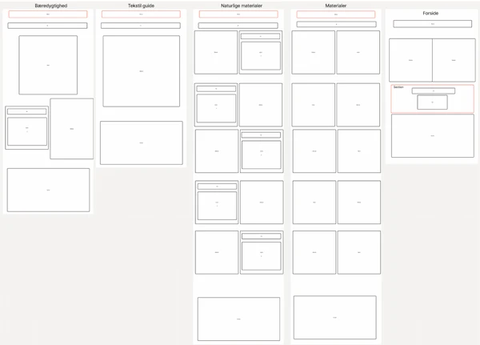
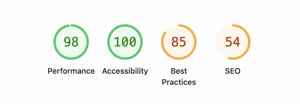

I dette tema arbejdede jeg med at udvikle en brugercentreret digital løsning, hvor fokus var på brugeroplevelse, usability og test. Løsningen tog udgangspunkt i et design brief og blev udviklet som en interaktiv prototype i Figma, som senere blev omsat til et website ved hjælp af HTML, CSS og JavaScript. Undervejs havde jeg særligt fokus på UX/UI-konventioner, intuitiv navigation og at skabe en løsning, der var nem at forstå og anvende for brugeren.
Introduktion til Grundlæggende UX/UI
I temaet arbejdede jeg med brugeroplevelse og brugercentreret design, hvor fokus var på at forstå brugernes behov og omsætte dem til intuitive digitale løsninger. Jeg arbejdede med UX/UI-konventioner, prototyping og iterative designprocesser samt med testmetoder som tænke-højt-test, 5-second test og Lighthouse test for løbende at evaluere og forbedre løsningerne. Samtidig arbejdede jeg med planlægning og produktion af indhold, så både design og indhold understøttede en god og brugervenlig oplevelse.
Løsning
Proces
Min proces var iterativ og tog udgangspunkt i research og brugerforståelse. Jeg arbejdede med metoder som tænke-højt-test, 5-second test og Lighthouse test for at undersøge, hvordan brugere oplevede designet, og hvor der var behov for forbedringer. Testresultaterne gav konkrete indsigter, som jeg brugte til at justere layout, indhold og brugerflow. Gennem prototyping i Figma, wireframes, styletiles og mock-ups kunne jeg hurtigt afprøve idéer og forbedre løsningen løbende. Jeg arbejdede også med indsamling og tilpasning af indhold, så tekst og billeder understøttede brugeroplevelsen.
Læring
Gennem temaet har jeg fået en bedre forståelse for, hvordan test og brugerindsigter spiller en central rolle i udviklingen af gode digitale brugeroplevelser. Jeg har lært at planlægge og udføre brugertest og anvende resultaterne aktivt i mit designarbejde. Temaet har styrket min evne til at arbejde mere indsigtsdrevet og til at træffe designbeslutninger baseret på brugernes behov frem for mavefornemmelser. Samlet set har jeg fået et solidt grundlag for at arbejde med UX/UI-design i praksis.